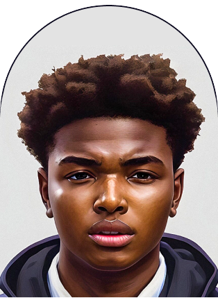

SAMUEL ODILI
FRONT-END
DEVELOPER
FRONT-END DEVELOPER
HIRE ME NOW
Hey there! I'm Samuel Odili, a Frontend Developer who loves
to build products that are user-friendly, engaging, and help
businesses and people grow.
